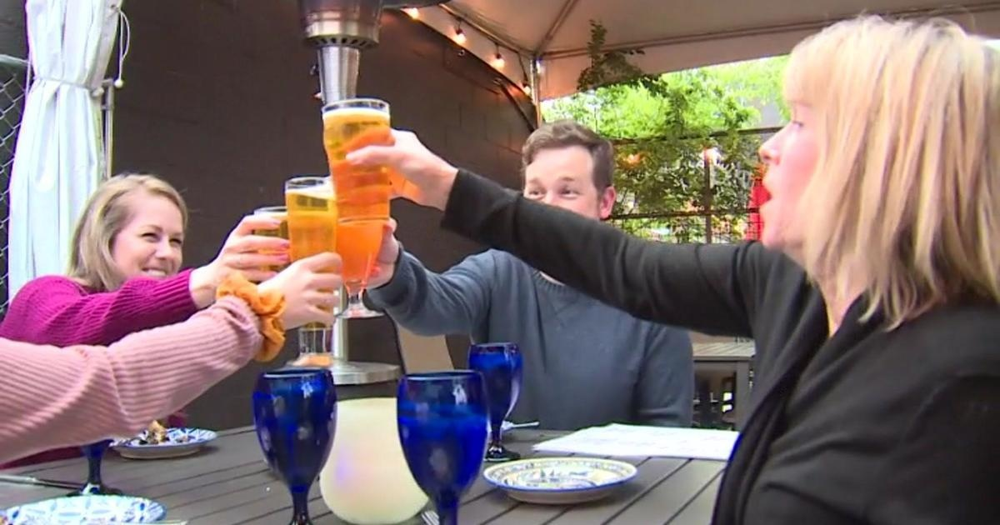

Sacramento Beer Week returns to pre-pandemic levelsSACRAMENTO - The 14th annual Sacramento Beer Week has kicked off and local brewers said people are coming out at pre-pandemic levels. The celebration runs for 10 days and highlights breweries, taprooms and restaurants all across Sacramento, Placer, Yolo and El Dorado Counties. Ray Ballestero, owner of Alaro Craft Brewery, said they have been open for six years and this weekend has already held some of the busiest days his business has ever seen. "Restaurants, breweries, they had a really really difficult time. Not only from the pandemic and loss of business and loss of staff and building it back but now the price increase on everything is substantial," Ballestero said. Despite the difficult time businesses have had, he said people are still coming out in full force. Something the Manager of Jackrabbit Brewing Company, Evey Ramos, agrees with. "People are still coming out. I do think people are being a little more selective with where they spend their money and maybe aren't going out quite as often as they would but they're still coming out," Ramos said. The start to the 2024 Sacramento Beer Week is starting off strong, but both owners said it is a good reminder to shop, or in this case, drink local. "People in your neighborhood breweries are people I've known for years so they're my personal friends so personally, I love seeing the community support to help them continue what they're doing and what they love," Ramos said. Ballestero said it has been a long time coming, but it feels like Sacramento Beer Week is finally back to normal. "You're seeing a lot of familiar faces but you're seeing a ton of new faces and faces we haven't seen for a long time. It kind of feels alive again," Ballestero said. There are more than 100 events scheduled across Sacramento, Yolo, Placer and El Dorado Counties until May 5. This year, they are introducing a new festival: "The Sacramento Brewers Showcase." That will take place on Saturday, May 4. For more information and to find a list of all the events, you can find them by clicking here. |
 |